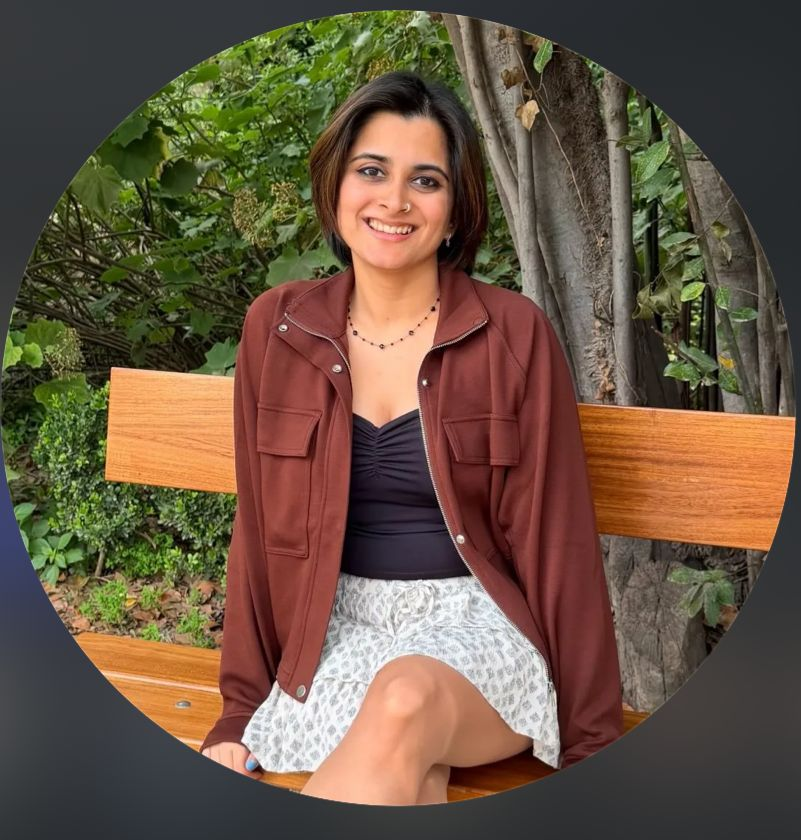
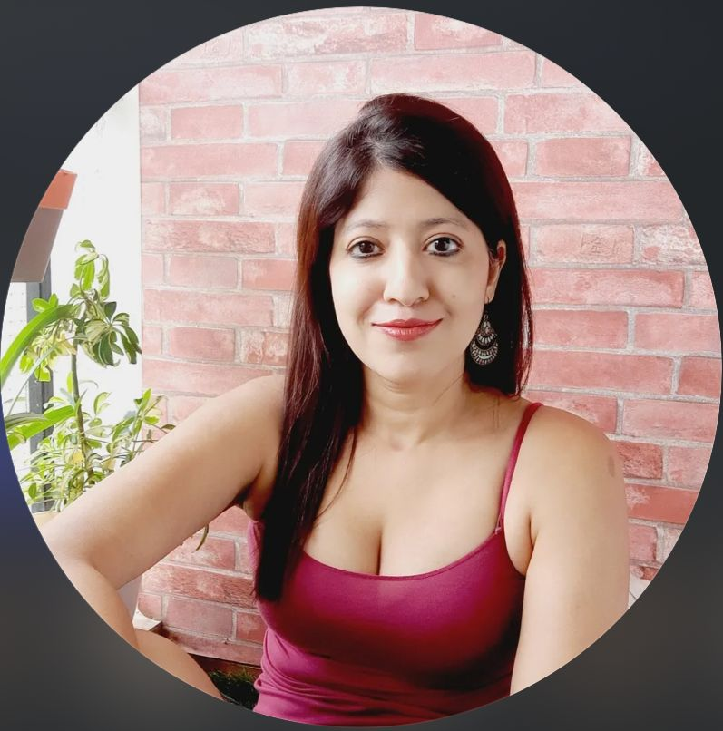

Should Elfina build a referral channel?
Before picking a partner, I wanted to identify one thing.
Who is the ideal customer for Elfina?
“We built Elfina for working professionals. Millennials in India who know they need therapy but don't know where to start.”
Lives in a metro city. Earns enough to pay for therapy out of pocket. Already wants it, and just isn't sure where to start.
Recommendation
All three channels work. Fertility clinics come first.
Three partners on the table. Fertility goes first.
A real channel, but not the first bet.
Already served, and a different patient.
How do we close
fertility clinics?
Start with the obvious playbook.
Roughly half the major IVF chains have no in-house counselling. That is the opening.
Outreach and call booking handled by the Founder's Office.
How do we close
fertility clinics?
The Fertility Podcast
Conversations with fertility doctors and people sharing their struggles. Hosted by Elfina's founder. Builds trust with clinics before the first sales call.

Fertility Influencer Marketing
Fertility content is near-white space in India. Partner with creators who already have the audience.
Documented her full IVF journey openly: infertility, the emotional toll, embryo testing, telling family. Closest to a real Indian fertility creator.

Counselling psychologist. India's most recognized mental health creator. Relatable, funny, myth-busting content about therapy.

~80k followers. Focused on couples, marriage, and romantic relationships. Directly relevant to fertility couples.
More creators via Modash and Soocel directories. Fertility content in India is white space.
Support Groups, Community & Events
Online and in-person meetups for people going through fertility treatment. Elfina already has an onboard community. Extend it into fertility-specific spaces.

What I'd watch.
Competition
Half the major IVF chains already advertise in-house counselling, so the play is the half that don't. Elfina's wedge: matched clinical therapy, a tier deeper.
Time-bounded value
A fertility patient's therapy need fades when the journey ends, a shorter lifetime value than postpartum into parenting.
Legality
Indian medical-conduct rules prohibit paying for referrals. The model is a partnership, not a paid channel; money flows clinic-to-Elfina for a service delivered.
The economics
Everything rests on Elfina's revenue per patient and the matching-call conversion rate, the number to confirm before scaling.
Sources.
- IVF cycles & India fertility industry, BioSpectrum India
- Therapy-relevant distress in fertility patients (~78%), PMC
- In-clinic postpartum therapy uptake (90%+), Frontiers
- Postpartum depression prevalence in India (~22%), PMC
- National Mental Health Survey 2016, PubMed
- Fertility-clinic audit: procedures, pricing tier & in-house counselling across 12 chains (clinic websites)
- Elfina's customer, founder post, Grapevine, "Why I started Elfina"
- Elfina's age group & pricing, founder post, Grapevine
- Elfina on its audience ("millennials in India"), Elfina Health company profile
- Referral fee-splitting prohibition: IMC Professional Conduct Regulations 2002, Clause 6.4